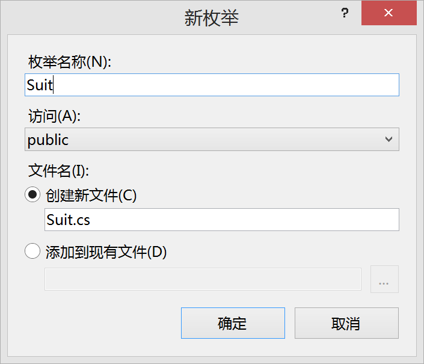
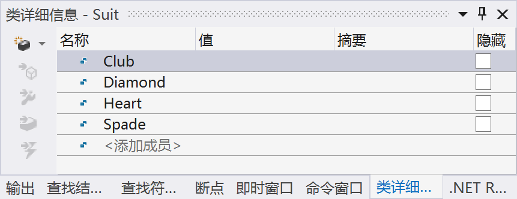
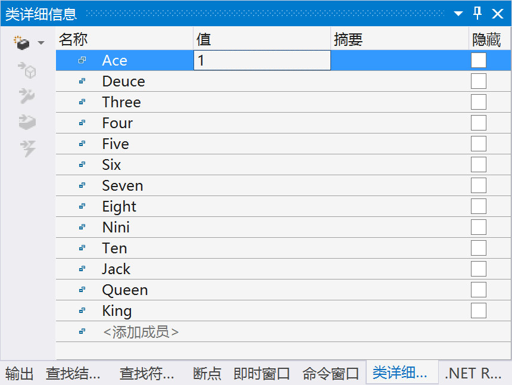
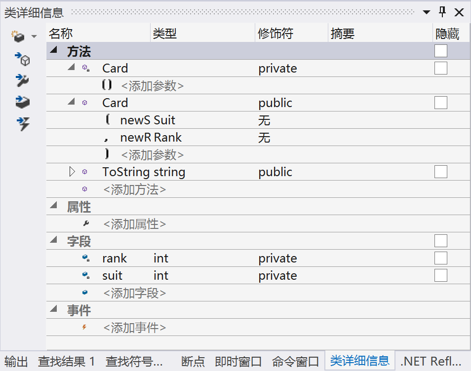
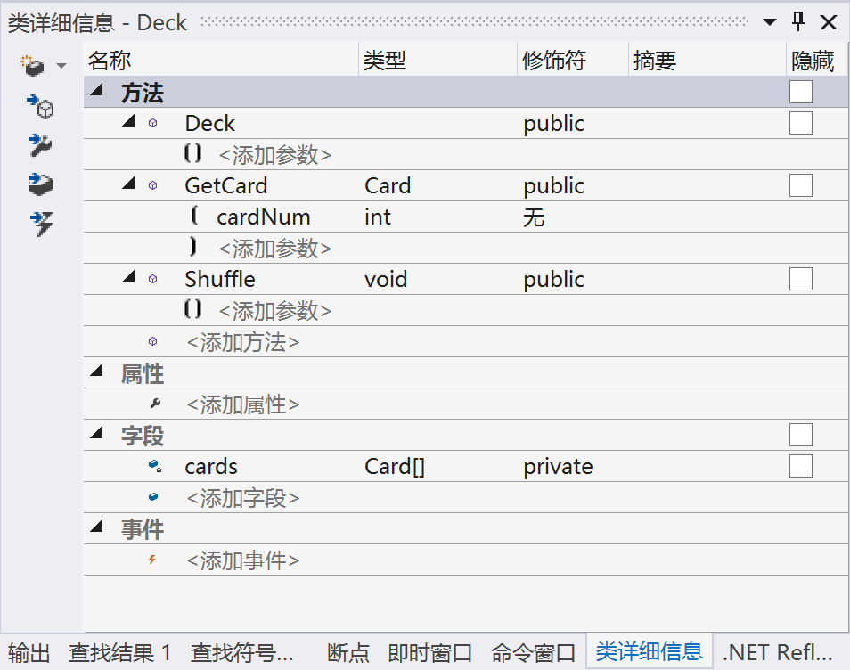
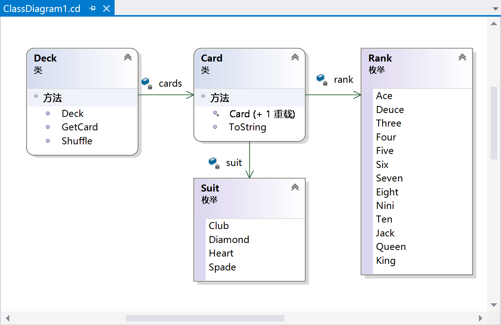

编写类库
对于本例，假定读者对 IDE 比较熟悉，所以不再使用标准的 “试一试” 方式明确列出各个步骤（这些步骤已经在前面多次用过），重要的是详细讨论代码。不过，这里要包含一些提示以确保不出问题。
类和枚举都包含在一个类库项目 Ch10CardLib 中。这个项目将包含 4 个 .cs 文件：Card.cs 包含 Card 类的定义，Deck.cs 包含 Deck 类的定义， Suit.cs 和 Rank.cs 文件包含枚举。
可以使用VS的类图工具把许多代码组合在一起。
如果不愿意使用类图工具，也不必担心。下面各节都包含了类图生成的代码，所以读者完全可以理解这些内容。
首先需要完成以下操作：
（1）在 C:\BegVCSharp\Chapter10 目录中创建一个新类库项目 Ch10CardLib。
（2）从项目中删除 Class1.cs。
（3）使用 解决方案资源管理器 窗口打开项目的类图（右击项目，然后单击 类详细信息）。类图开始时应为空白，因为项目不包含类。
1. Suit 和 Rank 枚举
把一个 Enum 从工具箱拖动到类图中，再在显示的 New Enum 对话框中填写信息，就可以在类图中添加一个枚举。例如，对于 Suit 枚举，应在对话框中添加 如图 10-11 所示 的信息。

图 10-11
接着使用 类详细信息 窗口添加枚举的成员。需要添加的值 如图 10-12 所示。

图 10-12
以相同的方式利用工具箱添加 Rank 枚举。需要的值 如图 10-13 所示。

图 10-13
第一个成员
Ace的输入值为1，它会使枚举的底层存储匹配扑克牌的大小，例如Six就存储为 6。
为这个两个枚举生成的代码位于 Suit.cs 和 Rank.cs 文件中。在 Ch10CardLib 文件夹的 Suit.cs 文件中可以找到 Suit 枚举的完整代码，如下所示：
using System;
using System.Collections.Generic;
using System.Linq;
using System.Text;
namespace Ch10CardLib
{
public enum Suit
{
Club,
Diamond,
Heart,
Spade,
}
}
在 Ch10CardLib 文件夹的 Rank.cs 文件中可以找到 Rank 枚举的完整代码，如下所示：
using System;
using System.Collections.Generic;
using System.Linq;
using System.Text;
namespace Ch10CardLib
{
public enem Rank
{
Ace = 1,
Deuce,
Three,
Four,
Five,
Six,
Seven,
Eight,
Nine,
Ten,
Jack,
Queen,
King,
}
}
另外，也可以添加 Suit.cs 和 Rank.cs 代码文件，再手工输入这些代码。注意 ⚠️，代码生成器在最后一个枚举成员后添加的逗号不会妨碍编译，不会创建一个额外的空成员，但它们可能会带来一些混乱。
2. 添加 Card 类
本节将结合使用类设计器和代码编辑器来添加 Card 类。使用类设计器添加类与添加枚举十分类似，也是把相应的项从工具箱拖动到类图中。这里要把 Class 拖动到类图中，并把新类命名为 Card。
使用 类详细信息 窗口添加字段 rank 和 suit，再使用 属性 窗口把字段的 常量类型 设置为 readonly。还需要添加两个构造函数，一个是默认构造函数（私有），另一个构造函数（公共）带有两个参数：newSuit 和 newRank，其类型分别是 Suit 和 Rank。最后重写 ToString()，这需要在 属性 窗口中修改 继承修饰符，将它设置为 override。
图 10-14 显示了 类详细信息 窗口和已输入所有信息的 Card 类（可在 Ch10CardLib\Card.cs 中找到其代码）。

图 10-14
然后需要修改 Card.cs 中类的代码（或者把这些代码添加到名称空间 Ch10CardLib 的新类 Card 中），如下所示：
public class Card
{
public readonly Suit suit;
public readonly Rank rank;
}
private Card() { }
public Card(Suit newSuit, Rank, newRank)
{
suit = newSuit;
rank = newRank;
}
public override string ToString()
{
return "The " + rank + " of " + suit + "s";
}
重写的 ToString() 方法将已存储的枚举值的字符串表示写入到返回的字符串中，非默认的构造函数初始化 suit 和 rank 字段的值。
3. 添加 Deck 类
Deck 类需要使用类图定义以下成员：
● Card[] 类型的私有字段 cards。
● 公共方法 GetCard()，它带有一个 int 参数 cardNum，并返回一个 Card 类型的对象。
● 公共方法 Shuffle()，它不带参数，返回 void。
添加了这些成员后，Deck 类的 类详细信息 窗口就 如图 10-15 所示。

图 10-15
为使类图更加清晰，可以显示所添加的成员和类型之间的关系。在类图依次右击下面的项，从菜单中选择 显示为关联 选项：
● Deck 中的 cards
● Card 中的 suit
● Card 中的 rank
完成后的类图 如图 10-16 所示。

图 10-16
接着修改 Deck.cs 中的代码（如果不使用类设计器，就必须首先使用下面的代码添加这个类）。这些代码包含子在 Ch10CardLib\Deck.cs 中。首先实现构造函数，它在 cards 字段中创建 52 张牌，并给它们赋值。对两个枚举的所有组合进行迭代，每次迭代都创建一张牌。这将使 cards 最初包含一个有序的扑克牌列表：
using System;
using System.Collections.Generic;
using System.Linq; using System.Text;
using System.Threading.Tasks;
namespace Ch10CardLib
{
public class Deck
{
private Card[] cards;
public Deck()
{
cards = new Card[52];
for (int suitVal = 0; suitVal < 4; suitVal++)
{
for (int rankVal = 1; rankVal < 14; rankVal++)
{
cards[suitVal * 13 + rankVal - 1] = new Card((Suit)suitVal, (Rank)rankVal);
}
}
}
}
}
然后实现 GetCard() 方法，为指定的索引返回 Card 对象，或者以与前面相同的方式抛出一个异常：
public Card GetCard(int cardNum)
{
if (cardNum >= 0 && cardnum <= 51)
return cards[cardNum];
else
throw (new System.ArgumentOutOfRangeException("cardNum", cardNum, "Value must be between 0 and 51."));
}
最后实现 Shuffle() 方法。这个方法创建一个临时的扑克牌数组，并把扑克牌从现在的 cards 数组随机复制到这个数组中。这个函数的主体是一个从 0～51 的循环，在每次循环时，都会使用 .NET Framework 中 System.Random 类的实例生成一个 0～51 之间的随机数。进行了实例化后，这个类的对象使用方法 Next(X) 生成一个介于 0～X 之间的随机数。有了一个随机数后，就可以使用它作为临时数组中 Card 对象的索引，以便复制 cards 数组中的扑克牌。
为了记录已赋值的扑克牌，我们还有一个 bool 变量的数组，在复制每张牌时，把该数组中的值指定为 true。在生成随机数时，检查这个数组，看看时否已经把一张牌复制到临时数组中由随机数指定的位置上了，如果已经复制，将生成另一个随机数。
这不是完成该任务的最高效的方式，因为生成的许多随机数都可能找不到空位置以复制扑克牌。但是，它仍能完成任务，而且很简单，因为 C#代码的执行速度很快，我们几乎觉察不到延迟。代码如下：
public void Shuffle()
{
Card[] newDeck = new Card[52];
bool[] assigned = new bool[52];
Random sourceGen = new Random();
for (int i = 0; i < 52; i++)
{
int destCard = 0;
bool foundCard = false;
while (foundCard == false)
{
destCard = sourceGen.Next(52);
if (assigned[destCard] == false)
foundCard = true;
}
assigned[destCard] = true;
newDeck[destCard] = cards[i];
}
newDeck.CopyTo(cards, 0);
}
这个方法的最后一行使用 System.Array 类的 CopyTo() 方法（在创建数组时使用），把 newDeck 中每张扑克牌复制回 cards 中。也就是说，我们使用同一个 cards 对象中的同一组 Card 对象，而不是创建新的实例。如果改用 cards=newDeck，就会用另一个对象替代 cards 引用的对象实例。如果其他地方的代码仍保留对原 cards 实例的引用，就会出问题--不会洗牌。
至此，就完成了类库代码。
🔚